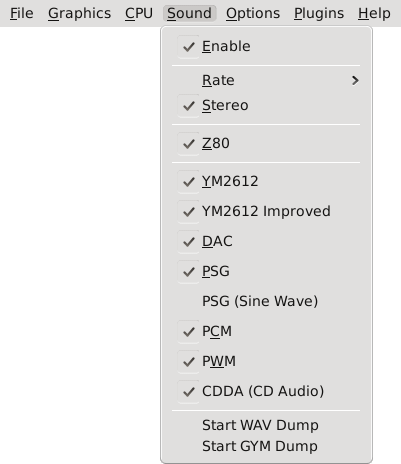

The Sound Menu allows you to adjust Gens/GS's audio output.
Enable: Enables or disables sound entirely.
Rate: Select the output sound frequency. Options are 11,025 Hz, 22,050 Hz (default, and 44,100 Hz (best).
Stereo: Enables Stereo sound output.
Z80: Enables sound output from the emulated Z80 coprocessor. This should usually be left enabled, since many games use the Z80 for music and sound effects.
YM2612: Enables the YM2612 FM synthesizer.
YM2612 Improved: Enables an improved version of the YM2612 FM synthesizer.
DAC: Enables the YM2612's Digital-to-Analog Converter, which is used by some games for sampled audio.
PSG: Enables the TI SN74689A Programmable Sound Generator.
PSG (Sine Wave): Modifies the PSG emulator to output sine waves instead of square waves. This option may be removed in a future version of Gens/GS, since it has no real purpose.
PCM: Enables the PCM audio chip found in the SegaCD.
PWM: Enables PWM audio output from the Sega 32X. Note that disabling this may break some games due to the way Gens/GS's PWM emulator is currently designed.
CDDA (CD Audio): Enables CD Audio support on SegaCD games.
Start/Stop WAV Dump: Controls WAV audio dumping. Select this while a game is running to start dumping the audio to a WAV file. Select it again to stop dumping.
Start/Stop GYM Dump: Controls GYM audio dumping. Select this while a game is running to start dumping the audio to a GYM file. Select it again to stop dumping. Note that GYM is an obsolete format, and has been replaced by VGM. Gens/GS will support VGM format eventually.